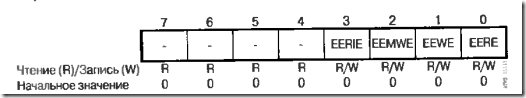
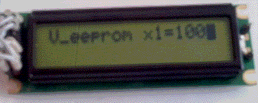

Всем привет. Рассмотрев в прошлой статье взаимодействие кнопок с контроллером, в этой записи разберем память МК AVR EEPROM (электрически стираемая ППЗУ), которая является энергонезависимой и имеет ресурс примерно в 100 000 циклов записи/чтения. Зачем нам нужна такая память с ограниченным числом обращений к ней? Такая память идеально подходит для хранения констант и исходных параметров, которые мы можем задать в начале программы, при помощи тех же кнопок.
Следует отметить, что некоторые производители комбинируют память типа EEPROM с SRAM. При прекращении подачи рабочего напряжения содержимое памяти переносится с SRAM в EEPROM, благодаря чему достигают короткого цикла записи не приводящему к износу.
Теперь рассмотрим как обращаться к ней. Для программирования памяти EEPROM используются три регистра, расположенные в области ввода/вывода памяти SRAM: восьмиразрядный регистр адреса EEAR или два регистра EEARH и EEARL; восьмиразрядный регистр данных EEDR; восьмиразрядный регистр управления EECR. когда происходит процесс записи, байт данных адресуется регистром адреса и заносится в регистр данных. В процессе чтения из памяти в регистр данных записывается содержимое ячейки EEPROM, адресуемой регистром адреса.
В книге Евстифеева, справочнике по микроконтроллерам (литературу я приводил в статье №1), описаны программные примеры для записи/чтения. Давайте разберем программу:
Реализация функции записи:
void EEPROM_write (unsigned int uiAddress, unsigned char uoData)
{
while ( EECR & (1<<EEWE)); //ждем завершения предыдущей записи
EEAR = uiAddress; //Проинициализировать регистр адресса
EEDR = uoData ; //Проинициализировать регитр данных
EECR |= (1<<EEMWE); //Установить флаг EEMWE
EECR |= (1<< EEWE); //Начать запись в EEPROM
}
Разберем программу.
1. EEWE является разрядом регистра (рисунок ниже) EECR и отвечает за разрешение записи в EEPROM, если установлен в 1, то происходит запись в EEPROM, при условии что EEMWE установлен в 1.
2. Загружаем адрес в регистр адреса EEAR

Разряды регистра управления EECR:
EERIE — разрешение прерывания от EEPROM;
EEMWE — управлене разрешением записи в EEPROM;
EEWE — разрешение записи в EEPROM;
EERE — разрешение чтения из EEPROM.
3. Загружаем байт данных в регистр данных EEDR.
4. EEMWE – управление разрядом разрешения записи в EEPROM. Этот флаг отвечает за функционирование разряда разррешения записи EEWE. При установке в 1запись разрешается, если 0, то при установке EEWE в 1 запись в память не произойдет. После программной установки EEMWE сбрасывается через 4 машинных цикла.
5. Записываем данные в память.
!!!Здесь есть один ньюанс. Если планируется переодическая запись данных в EEPROM во время выполнения программы, при самопрограммировании микроконтроллера, то необходимо знать, что запись в EEPROM не может одновременно выполняться с записью во Flash память , поэтому выше после первого пункта необходимо добавить следующий пункт:
— дождаться завершения записи во Flash-память прграмм, т.е. ждать пока не сбпроситься флаг SPMEN регистра SPMCR, тогда после этой строки необходимо добавить еще одно циклическое условие:
while (SPMCR &(1<<SPMEN));// Завершение записи во Flash память
Теперь разберем функцию чтения:
unsigned char EEPROM_write (unsigned int uiAddress)
{
while ( EECR & (1<<EEWE)); //ждем завершения предыдущей записи
EEAR = uiAddress; //Проинициализировать регистр адресса
EECR |= (1<<EERE); //Выполнить чтение
return EEDR;
}
Здесь все почти также, только в функцию передается адресс переменной, инициализируем его и разрешаем чтение по этому адрессу. Возвращаем данные.
Но прежде, чем использовать алгоритм записи или чтения EEPROM, необходимо объявить переменную, которая будет распределена в пределах области EEPROM. Для этого в библиотеке eeprom.h программной среды WinAVR определен специальный атрибут EEMEM. Например объявим переменную безнакового целочисленого типа с атрибутом.
EEMEM uint8_t eeprom_х ; // объявим переменную.
х –переменная;
uint8_t – целочисленный безнаковый тип, имеющие точно указанную разрядность, в данном случае 8 бит и предназначен для переносимости программ.
EEMEM – атрибут, заставляющий переменную быть распределенной в пределах раздела .eeprom. Данный атрибут определен в файле eeprom.h и выглядит он следующим образом.
#ifndef EEMEM
#define EEMEM__attribute__ ((section («.eeprom»)))
#endif
Для работы с данными в библиотеке уже прописаны функции:
для чтения
uint8_t eeprom_read_byte (const uint8_t *addr)
Аргументом функций eeprom_read_... является адрес переменной в EEPROM, а результатом — значение переменной в EEPROM.
для записи
void eeprom_write_byte (uint8_t *addr, uint8_t value)
Аргументами функций eeprom_write_... являются адрес в EEPROM, куда записать данные и значение которое нужно записать.
Ну что ж все это пережевав на последок программный пример в целом. Передадим в EEPROM данные и считаем.
#include <eeprom.h>
#include <stdio.h>
#include <avr/io.h>
#include «lcd.h»
uint8_t EEMEM eepro_х; /* такая переменная должна быть всегда глобальной и служит для передачи своего адресса в область EEPROM*/
char word[]="Hello";
main ()
{
uint8_t eepro_х1 = 100; /*вторая переменная для передачи данных*/
/*Давайте запишем переменную в память*/
eeprom_write_byte (&eeprom_x, eeprom_x1); /*передаем в функцию адресс переменной и значение которое запишем по этому адрессу*/
/*теперь убедимся, что в памяти у нас хранится значение 100, для этого обнулим текущее значение пременной х и присвоим считанное значение сз памяти*/
eeprom_х1 = 0;
/*считаем содержимое памяти*/
x1 = eeprom_read_byte (&eeprom_x); // взятие адресса переменной
sprintf (word,"V_eeprom x1=%3d",eeprom_x1);
PrintString (word);
}
Ниже на рисунке представлен результат:

Выше представленный код взят из статьи №4, в который вставлены выше приведенные строки.
Если в программе изначально передаются какието константы для хранения в памяти EEPROM, то при прошивке необходимо залить файл с расширением .eep, который будет создан компилятоором и размещен в той же директории что и рабочие файлы.
На этом пока все. Здесь дан краткий обзор для работы с такой памятью. Конечно есть куча ньюансов, но это уже тонокости. В следующей статье расмотрим ШИМ (широтно-имульсную модуляцию) и плавно перейдем к следующиму проекту попробуем сконструировать «мозги» для любительского станка ЧПУ. Всем пока.